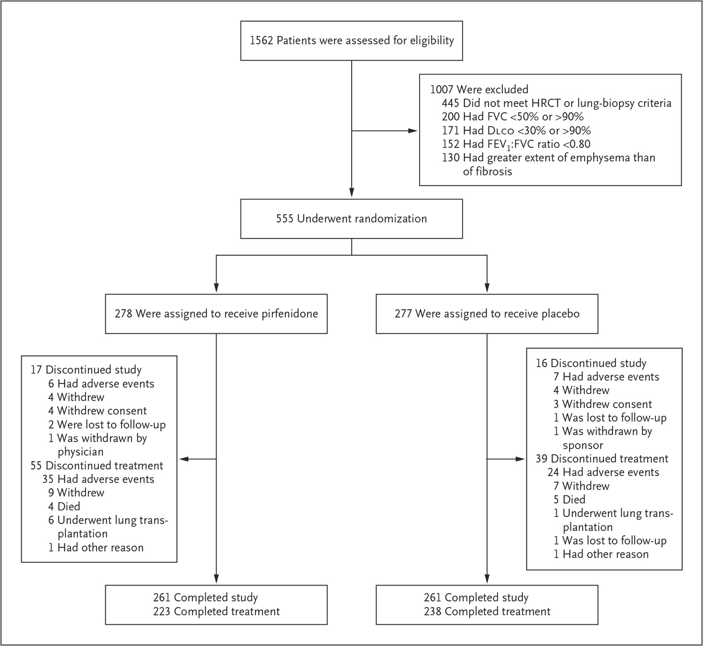
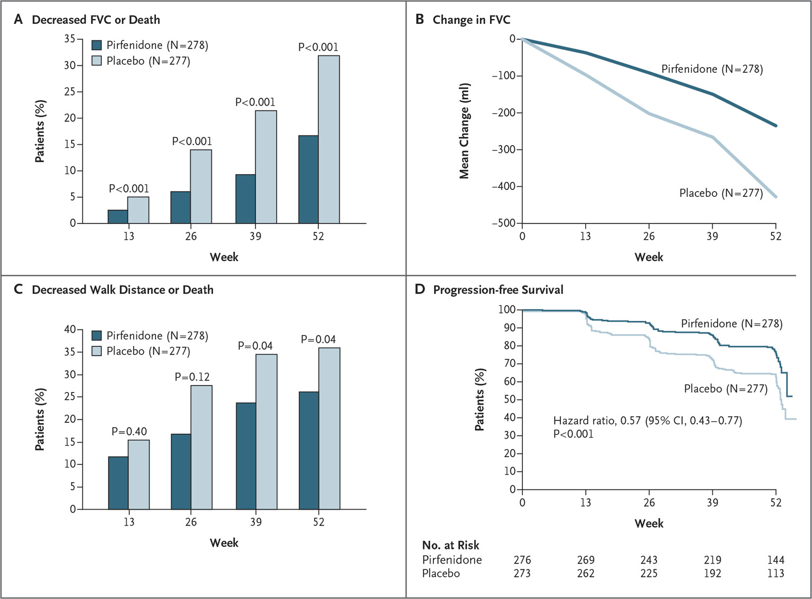
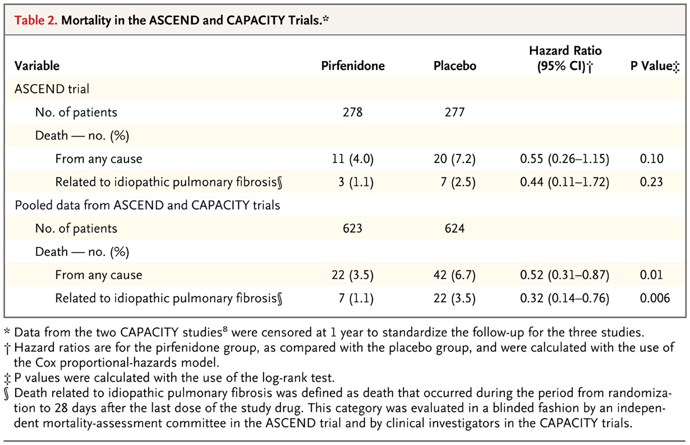
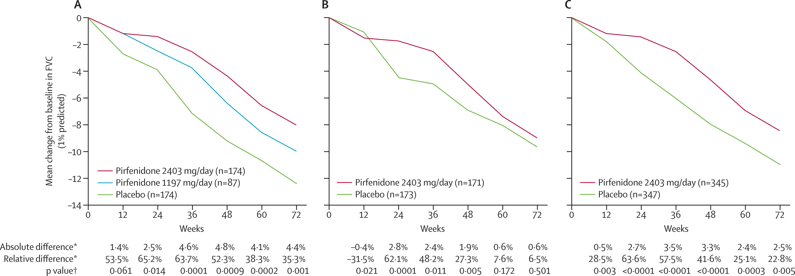
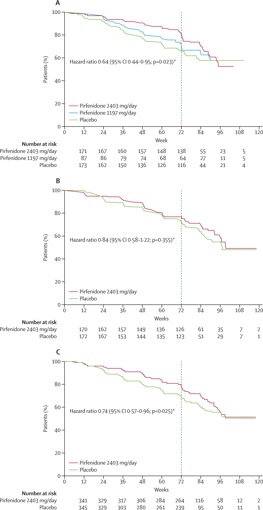
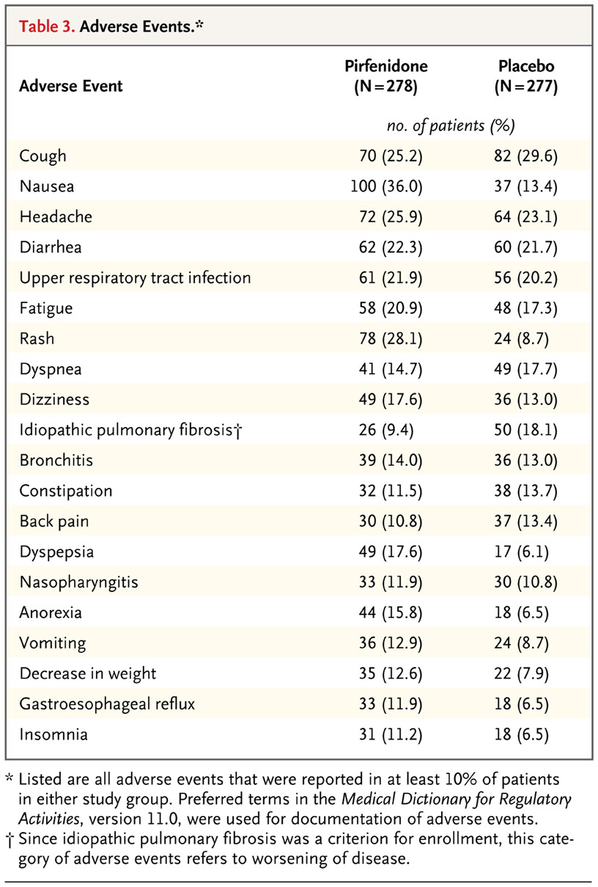

看重疾病進展變慢
證據主要支持 FVC decline 變慢，以及 progression-free survival 方向上的利益。
從 Trial Evidence 到 Acute Exacerbation——
真實世界有什麼新的佐證？
［報告者姓名］
胸腔內科｜［醫院名稱］
歷史脈絡 CAPACITY 的爭議 → ASCEND 的平反 → 2015／2022 Guideline 定位。Pirfenidone 怎麼走到今天？
AE-IPF 證據怎麼解讀 RCT 不是以 AE 預防為主要終點；真實世界資料可做臨床線索，但語氣要保守。
副作用差異與選藥邏輯 Pirfenidone vs Nintedanib——不是誰比較強，而是誰更適合這個病人。
個案分享與討論 真實臨床情境 + 開放提問。
CAPACITY（Lancet） 兩個 phase 3 試驗同步發表：Study 004 主要終點達成、Study 006 未達成。FDA 以結果不一致為由暫不核准；EMA 隔年（2012）率先核准。
ASCEND（NEJM） 設計更嚴謹的 phase 3 trial（N=555），主要複合終點清楚達成（p<0.001）。同年 FDA 核准 pirfenidone 與 nintedanib，IPF 正式進入雙藥抗纖維化時代。
ATS/ERS/JRS/ALAT IPF Guideline 對 pirfenidone 給予 conditional recommendation for use（moderate quality evidence）；與 nintedanib 同為 guideline 支持的選項。
ATS/ERS/JRS/ALAT 更新 IPF 的 pirfenidone 角色延續。新增 PPF guideline：nintedanib 有 conditional recommendation；pirfenidone 建議需更多研究，不可直接外推。
2015 ATS/ERS/JRS/ALAT treatment guideline 建議臨床醫師可在 IPF 使用 pirfenidone。
確立 IPF 診斷。
評估肺功能、共病、肝腎功能與用藥交互作用。
與 nintedanib 一起列入抗纖維化治療選項。
證據主要支持 FVC decline 變慢，以及 progression-free survival 方向上的利益。
Nausea、rash、photosensitivity、體重下降、肝功能監測，都會影響病人是否願意長期吃。
戶外工作、日曬、一天三次服藥、既有用藥與經濟負擔，都會改變治療選擇。
IPF trial 與 guideline 支持使用 pirfenidone 作為抗纖維化治療選項。
2022 ATS/ERS/JRS/ALAT guideline 對 nintedanib 有 conditional recommendation；pirfenidone 則建議需要更多研究。
跟病人說「肺功能下降速度變慢」比說「肺會變好」準確。
Pirfenidone 的核心價值是改變 disease trajectory，不是 bronchodilator，也不是急性救援治療。
收案條件（主要排除理由）
主要終點
FVC % predicted 下降 ≥10% 或死亡的複合終點（52 週）。Pirfenidone 2,403 mg/day（801 mg TID，隨餐）vs Placebo。

主要複合終點：FVC % predicted 下降 ≥10% 或死亡（52 週）
Pirfenidone 16.5% vs Placebo 31.8% — ARR 15.3%，NNT ≈ 7，p<0.001
All-cause mortality：4.0% vs 7.2%（未以 mortality 為主要終點，樣本數不足個別達顯著）

ASCEND 單獨（未以死亡率為主要終點）
All-cause mortality：4.0%（11/278）vs 7.2%（20/277），HR 0.55（95% CI 0.26–1.15），p=0.10。方向正向，樣本數不足個別達顯著。
ASCEND + CAPACITY 三試驗合併（N≈1,247，post-hoc）
All-cause mortality HR 0.52（95% CI 0.31–0.87），p=0.01。IPF-related mortality HR 0.32（0.14–0.76），p=0.006。
⚠️ Post-hoc pooled analysis，非 pre-specified mortality endpoint：方向清楚，但解讀需保守。

Pirfenidone 2403 mg/day + 1197 mg/day 兩個劑量組 vs Placebo（三臂設計）。N=174 / 87 / 174。
72 週時 Pirfenidone 2403 mg 組 FVC 絕對差異 4.4%（相對差 35.3%），p=0.001。
Pirfenidone 2403 mg/day vs Placebo（兩臂）。N=171 / 173。結果：−9.0% vs −9.6%（差 0.6%，NS）。
可能原因：placebo 組恰巧穩定（抽樣變異）、地域與執行差異。方向與 004 一致，但未達統計顯著。
FDA 2011 年以兩 trial 結果不一致為由暫不核准；2014 年 ASCEND 補上這個缺口後才完成核准。

三條 KM 曲線的解讀
Study 004（圖 A） HR 0.64（95% CI 0.44–0.95），p=0.023。Pirfenidone 明顯壓低 PFS 事件率。
Study 006（圖 B） HR 0.84（95% CI 0.58–1.22），p=0.355（NS）。兩組曲線分離幅度小。
合併分析（圖 C） HR 0.74（95% CI 0.57–0.96），p=0.025。整體方向一致，效果量介於兩試驗之間。
虛線（72 週）= 主試驗結束；之後追蹤屬延伸期，退出率高，解讀需保守。

三試驗的 point estimate 方向相同：FVC % predicted 下降被延緩；PFS 均改善（HR 0.57–0.74）。Study 006 主要終點 NS，但幅度與方向不矛盾。
三試驗合併 all-cause mortality HR 0.52（0.31–0.87）；IPF-related mortality HR 0.32。方向清楚，但為 post-hoc pooled analysis，強度有限。
Pirfenidone 在 IPF 中能延緩 FVC 下降斜率，是 guideline 支持的選項。告訴病人「讓惡化速度變慢」，不說「讓肺功能變好」。
發生率：IPF 患者每年約 5–10% 發生 AE；moderate IPF 更高達 38%。
預後極差：AE-IPF 後中位存活僅 3–4 個月；院內死亡率約 50%；1 年存活率 56%，5 年 18%。
AE 是 IPF 死亡率的獨立預測因子：多變量 HR 1.87（95% CI 1.38–2.53，p<0.001），強度超過 FVC、DLCO。
Pirfenidone 延緩 disease progression → 維持較高肺功能儲備 → 減少上皮細胞損傷累積（TGF-β1 suppression、抗炎）→ 降低 AE 誘因。
以下四張畫面是真實世界佐證。注意：均為觀察性或 retrospective 研究，非 RCT 主要終點。
Sci Rep 2020（韓國峨山醫療中心）
回溯性 propensity-matched，抗纖維化組（n=474，其中 pirfenidone 90.5%）vs 未治療組（n=474），中位追蹤 52 個月。
AE 後中位存活：4 個月（用藥） vs 1 個月（未用藥）
全原因死亡、呼吸相關住院、AE 發生率、AE 後死亡率均顯著降低。
Respir Med 2021（東邦大學，日本，n=195）
Pirfenidone（n=131）vs Nintedanib（n=64），回溯性，2009–2018。排除 inhaled NAC 干擾、限 first-line 用藥後差異仍顯著。
多變量分析顯示 nintedanib 組 AE 風險較高；但這是單中心回溯性研究，只能視為 hypothesis-generating。
Perioperative pirfenidone vs standard care
AE 風險降低 69%
RR 0.31（95% CI 0.13–0.70）
90-day mortality 降低 81%
RR 0.19（95% CI 0.07–0.52）
Heart Lung. 2025 Nov-Dec;74:266-275
術前 pirfenidone（n=121）vs 對照（n=510，1:4 matched）
嚴重呼吸道併發症：2.5% vs 8.5%
OR 0.24（95% CI 0.07–0.76，p=0.015）
= 術後嚴重併發症風險降低 76%
Respirology. 2021;26(6):590-596
單中心回溯性，東邦大學大森醫院。AE 前後繼續 / 新增 pirfenidone vs 未使用。
With pirfenidone：55%
Without pirfenidone：34%
Respir Med. 2017 May;126:93-99
Pirfenidone（n=11）vs Control（n=9）；所有患者均接受標準支持治療。
Pirfenidone：137 天（95% CI 39–373）
Control：16 天（95% CI 14–22）
HR for death：0.29（0.10–0.88，p=0.0009）
Curr Med Res Opin. 2019;35(7):1187-1190
需要提前告知的重點
GI + 皮膚
Nausea 36% vs 13%、rash 28% vs 9%、photosensitivity 9% vs 1%。GI 副作用在 titration 期最明顯，隨餐服藥可大幅減輕。
肝功能監測
ALT/AST >3× ULN 約 2–3%。治療前基準值 → 前 6 個月每月 → 之後每 3 個月。
CYP1A2 交互作用
Fluvoxamine（禁忌）、Ciprofloxacin（需調整）。抽菸可使暴露量降低 ~50%，顯著影響療效。

若腹瀉明顯影響生活或曾因此停藥，pirfenidone 可作為替代抗纖維化選項。
正在 full anticoagulation、出血風險高、GI perforation 風險高者，nintedanib 需更謹慎。
若病人 AE 風險偏高，可提到 Respir Med 2021 的單中心回溯性訊號；但不能把它當作兩藥 AE 預防優劣的定論。
戶外工作、務農或長時間日照者，pirfenidone 的 rash/photosensitivity 可能很影響生活。
Nintedanib 一天兩次；pirfenidone 一天三次。長期 adherence 直接影響真實療效。
慢性纖維化 ILD with progressive phenotype 與 SSc-ILD，nintedanib 的 label 與 2022 guideline 支持較直接。
| 面向 | Pirfenidone | Nintedanib |
|---|---|---|
| IPF 療效 | Guideline-supported；主要證據延緩 FVC decline（ASCEND/CAPACITY）。 | 同為 guideline-supported；主要證據也是延緩 FVC decline（INPULSIS）。 |
| 非 IPF PPF | 需要更多研究；不建議直接外推。 | 2022 guideline 有 conditional recommendation（INBUILD trial）。 |
| AE-IPF 證據 | 有觀察性研究顯示 AE 發生率較低，但非 head-to-head RCT，確定性低。 | 同一回溯性研究中 AE 發生率較高；需注意 indication bias 與單中心限制。 |
| 主要副作用 | Nausea ~36%、rash ~28%、photosensitivity ~9%、CYP1A2 交互作用、抽菸影響暴露。 | Diarrhea 最突出；另有 bleeding、arterial thromboembolic events、GI perforation 風險。 |
| 服藥方式 | 801 mg TID，需 titration，隨餐服用。 | 150 mg BID，約 12 小時間隔，隨餐服用。 |
| 研究 | 主要比較結果 | 臨床解讀 |
|---|---|---|
| Loveman 2015 | 間接比較曾顯示 nintedanib 在 continuous FVC decline 可能較佳。 | 早期 NMA，結論受 endpoint 定義與模型影響。 |
| Rochwerg 2016 | Mortality：pirfenidone vs nintedanib 無顯著差異。 | 強調沒有 direct head-to-head trial。 |
| Skandamis 2019 | FVC decline ≥10%、acute exacerbation、mortality、SAE：兩藥無顯著差異。 | 兩者皆有效，沒有可宣稱 superiority 的結果。 |
| Scott 2019 | 不同 NMA 方法會改變「誰較好」的答案。 | 避免把單一 NMA 排名當成治療排序。 |
| Wu 2024 | 兩者均減緩肺功能下降；FVC ≥10% decline 的效果量相近。 | 最新 RCT-based NMA 仍支持「兩者皆可」。 |
診斷確認 IPF（UIP pattern）？還是 PPF？兩者的 pirfenidone 證據地位不同，不可混用。
基線肺功能 FVC 50–90%、DLCO 30–90% 是 ASCEND 收案範圍，也是 guideline 推薦族群。
CYP1A2 交互作用 確認有無 fluvoxamine（禁忌）、ciprofloxacin（需調整）；確認是否抽菸（暴露量可降低 ~50%）。
肝功能基準值 開始前抽 ALT/AST；前 6 個月每月監測，之後每 3 個月。
Titration + 隨餐 前 2 週 267 mg TID → 2 週 534 mg TID → 完整劑量 801 mg TID（2,403 mg/day）；隨餐服藥可大幅減少 nausea。
基本資料
［待補：年齡、性別、病程、肺功能基線、用藥選擇理由］
臨床過程
［待補：治療反應、副作用處理、後續追蹤 FVC 變化］
65 歲男性，確診 IPF（UIP），FVC 72%，DLCO 55%。
同時有：
・正在服用 fluvoxamine（精神科共病）
・每天戶外工作 8 小時
・3 年前 upper GI bleed 病史（已治癒）
Pirfenidone 或 Nintedanib？需要什麼額外評估？
Fluvoxamine → strong CYP1A2 inhibitor → pirfenidone 禁忌或需大幅調整劑量
戶外工作 → photosensitivity 風險高 → pirfenidone 需嚴格防曬
GI bleed 史 → nintedanib 出血風險需評估
→ Shared decision-making 的典型場景
使用 pirfenidone 一年後，因 AE-IPF 住院，插管進 ICU。
1. AE 期間要停 pirfenidone 嗎？
2. 出院後是否繼續原藥？
參考：Respir Med 2017 — AE 後繼續 pirfenidone 者 3 個月存活 55% vs 34%
Curr Med Res Opin 2019 — 中位存活 137 天 vs 16 天（HR 0.29，p=0.0009）
兩篇均為單中心、小樣本、回溯性研究，無法得出「AE 時繼續 pirfenidone 一定有效」的結論。
「AE 後自動停藥」同樣缺乏依據。
現行共識：AE 時個別判斷，不自動停藥。
Pirfenidone 改的是斜率，不是方向。告訴病人「下降速度變慢」，不說「肺功能會變好」。
ASCEND 是關鍵 trial。Primary composite endpoint NNT ≈ 7，PFS HR 0.57，死亡率方向正向（pooled HR 0.52，post-hoc）。
AE-IPF 的資料要分層解讀。真實世界研究可提供線索，但不是 RCT 主要終點，也不能證明 pirfenidone 優於 nintedanib。
副作用是能不能持續治療的核心。Nausea、rash、photosensitivity 提前說好；titration + 隨餐服藥降低 GI 不耐受。
選藥是配對，不是排名。病人風險、共病、服藥習慣、副作用偏好，決定 pirfenidone vs nintedanib。